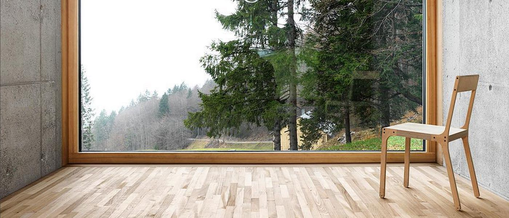
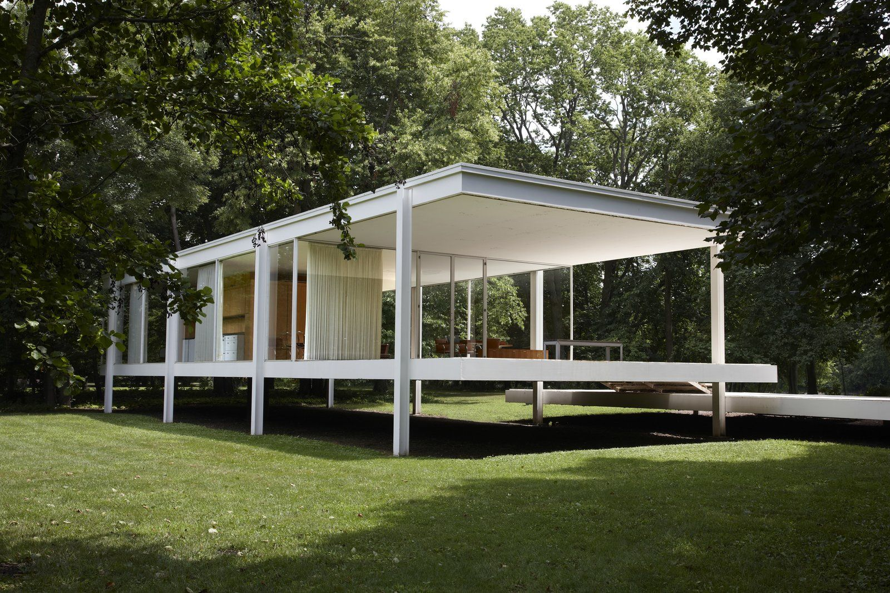
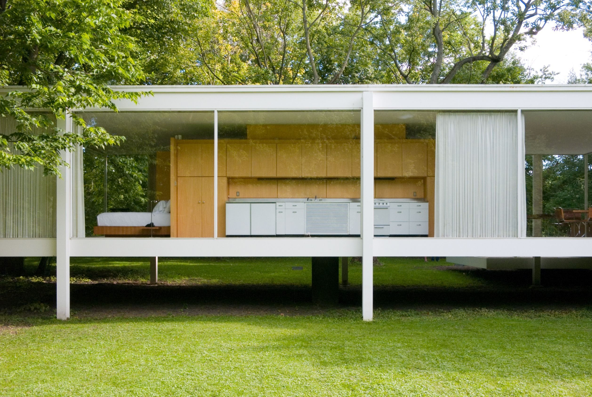
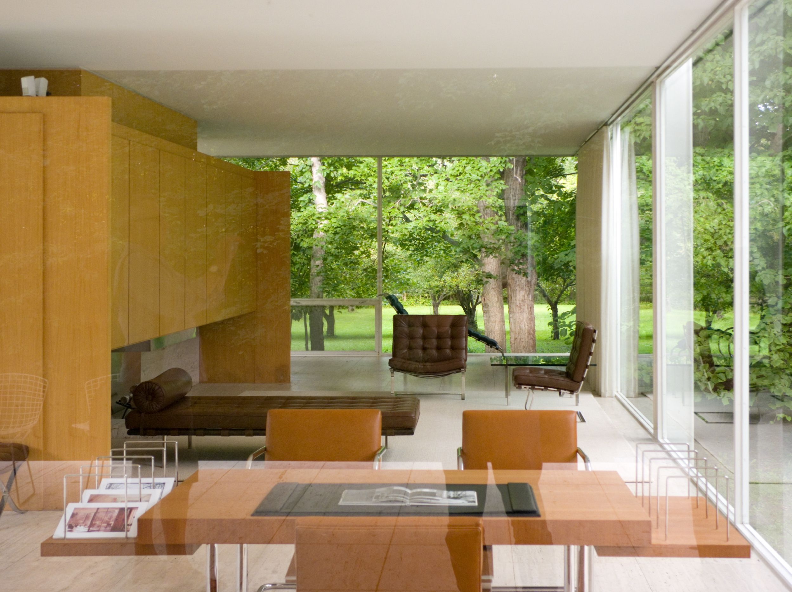
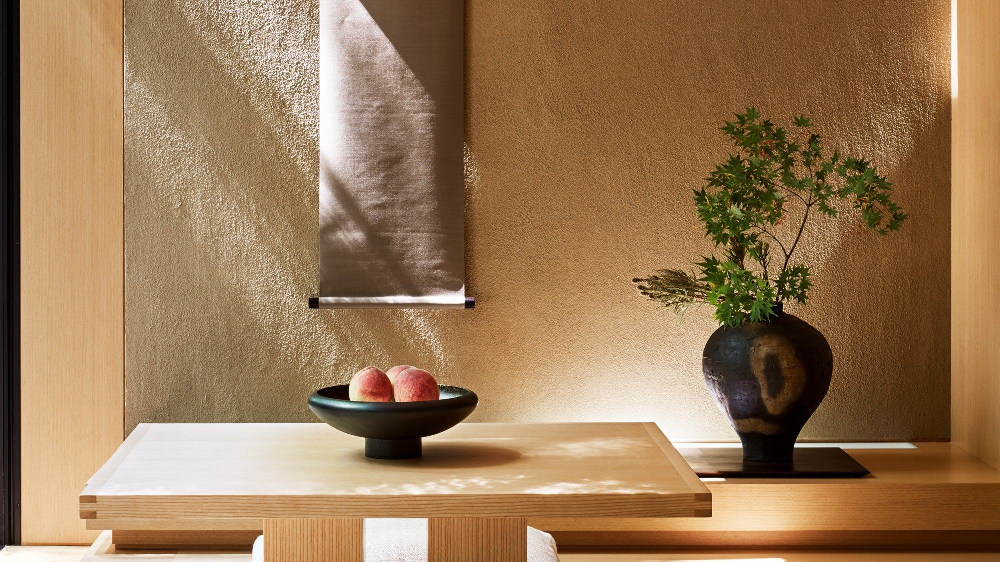
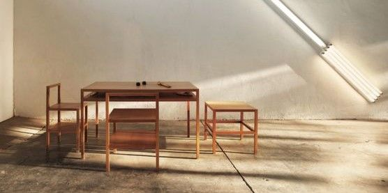
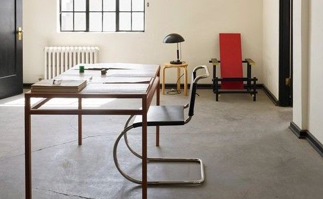
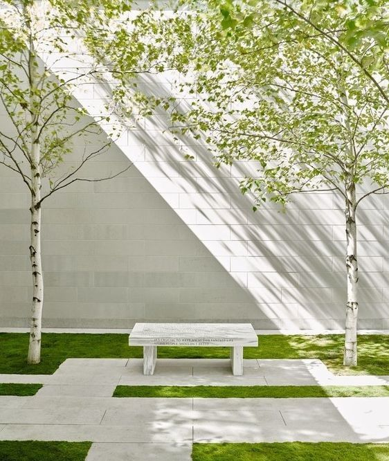
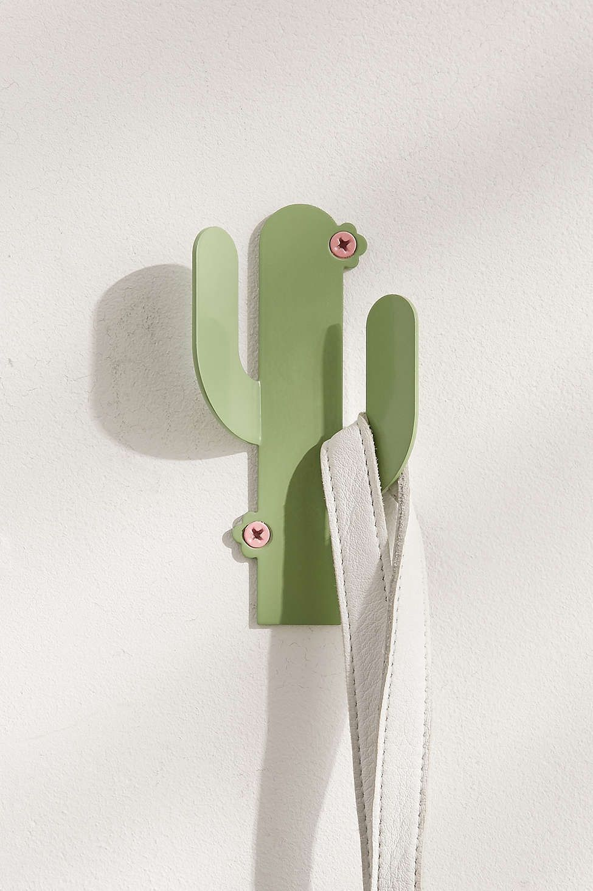

+++
title = "Minimalizm ve Sürdürülebilir Tasarım"
description=""
url="sayi-5/minimalizm-surdurulebilir-tasarim"
aciklama="“Fakirlik, yoksunluk, eksiklik değildir minimalizm; aksine bilinçli bir tercihtir. Zor olanı seçmektir, azla çok yapmaktır.” -Mies van der Rohe"
type="sayfa"
thumb="/img/minimailizm-surdurulebilir-tasarim-thumbnail.jpg"
date = "2021-01-01"
sayi=["05"]
sayfa="03"
yazar=["ece celik"]
tags= ["anasayfa", "dergi", "surdurulebilir tasarim", "ekoloji", "sanat akimi"]
+++


<div class="container">
    <div class="text-center">
        {{}}
        </div>
<h3>
   Minimalizm nedir?
</h3>
<div class="row">
    <div class="col-md-6"><p>
        Minimalizm sözcüğü Fransızca'dan gelen “<strong>minimum</strong>”
        sözcüğünden türemiştir. Minimumun kelime anlamı ise,
        <strong>
           “bir şey için gerekli en az veya en küçük miktar (derece, nicelik)”
        </strong>
        olarak belirtilmiştir. Minimum kelimesinin matematiksel ifadesine bakacak
        olursak,
        <em>“değişken bir niceliğin, inebildiği en alt basamak, asgari, minimal”</em>
        şeklinde tanımlanmıştır (Türk Dil Kurumu, 1988).
     </p>
     <p>
        Amerika’ da 1960 ve 1970 yıllarında etkili olan ve sanatsal biçimin aşırı
        yalınlığını savunan sanat anlayışı için “Minimalizm” terimi ilk kez 1965
        yılında Richard Wolheim tarafından kullanılmıştır.
     </p>
     <p>
        Minimalizm bir akım olarak değerlendirildiğinde, modernizm ile başladığı
        bilinmekte ve Modern Sanat akımlarının bir kısmından etkilenerek, bir kısmına
        da tepki olarak ortaya çıktığı bilinmektedir. Doğmasında öncülük eden akımlar
        De Stijl, Suprematizm, Pürizm, Konstrüktüvizm gibi gerçeklik, nesnellik,
        işlevsellik ve sadelik gibi kavramları ön plana çıkaran akımlar olmuştur
        (Özdoğru, 2004: 45)
     </p></div>
    <div class="col-md-6">
       {{}}
     <p><em>Farnsworth House, Mies Van der Rohe</em></p></div>
</div>

<div class="row">
    <div class="col-md-6"><p>
        Minimalizm kavramının tam olarak bir karşılığı olmadığından genellikle ünlü
        düşünürlerin ve tasarımcıların sözleriyle açıklanmaya çalışılır. Bunun sebebi
        ise minimalizmin kendine resim, heykel, müzik, edebiyat, sinema, mimari, ürün
        tasarımı gibi pek çok alanda yer bulmasıdır. Minimalizm, karşımıza bazen
        sanat akımı, bazen yaşam tarzı, bazen de tasarım dili olarak çıkmaktadır. Her
        ne kadar farklı alanlar olsalar da özlerinde taşıdıkları kaygı ve amaç
        aynıdır. Tüm minimalist oluşumların yol göstericisi olan Mies van der Rohe,
        minimalizmin özeti niteliğinde olan ünlü
        <strong>“less is more” (az, çoktur)</strong>
        ifadesini kullanmıştır.
     </p>
     <blockquote>
        <em>
           “Fakirlik, yoksunluk, eksiklik değildir minimalizm; aksine bilinçli bir
           tercihtir. Zor olanı seçmektir, azla çok yapmaktır.” -Mies van der Rohe
        </em>
     </blockquote>
     </div>
    <div class="col-md-6">
       {{}}
   </div>
</div>
<div class="row">
    <div class="col-md-6"><p>
        Minimalizm kavramını iyi anlayabilmek için hangi alanlarda neyi ifade
        ettiğini bilmekte fayda vardır.
     </p>
     <p>
        Minimalizm'in mimarlık ve tasarımdaki karşılığı
        <strong>
           “en az malzemeyle en yalın, en ekonomik ve en işlevsel sonuca gitmek”
        </strong>
        olarak tanımlanabilir (Kazmaoğlu, 1997). Minimalizm; bir düşünceyi, minimum
        sayıda renk, değer, biçim, çizgi ve dokuya indirgeyerek vermeye çalışır.
        Kendisinden başka, hiçbir düşünceyi, objeyi ya da deneyimi vermeye çalışmaz.
     </p>
     <p>
        Minimalist sanatçılar, seyirciler çalışmalarını izlerken geleneksel sanatta
        olan kompozisyonun, temanın ve diğer elemanların dikkatlerini dağıtmasını
        istemezler. Çalışmanın ortamı ve malzemeler, onun gerçekliğidir ve
        minimalistler bunu göstermeye çalışırlar; başka bir şeyi sembolize etmeye
        çalışmazlar. Renk, bir duyguyu belirtmek için kullanılmaz; sadece alanı
        belirtmek için kullanılır. Minimalist sanatçılar, yaptıkları çalışmanın kendi
        düşüncelerini yansıtması gerektiğine karşı çıkarlar.
     </p>
     <p>
        Yaşam tarzı olarak minimalizm ise, insanların hayatlarına neyin değer
        kattığını sorgulamalarını ve yaşamlarını karmaşadan temizleyerek, asıl önemli
        olanı bulmalarını amaçlar: sağlık, ilişkiler ve deneyimler. Bu yaşam tarzı
        son zamanlarda oldukça popüler bir hale gelmiş olsa da geçmişten beri bu
        düşünceleri benimseyen topluluklar olmuştur. Toplum yapısına göre minimalizmi
        benimseyenler değişmiş ve minimal yaşam tarzına en fazla benzeyen toplumun
        <strong>Japonlar</strong>
        olduğu görülmüştür. Dinlerinin etkisiyle minimal yaşamı benimseyen Japonlar
        her zaman sadelikten ve tabiatla iç içe olmaktan yanadırlar.
        <strong>Shibui düşüncesinin</strong>
        hakim olduğu Japonya'da minimalizmin etkili olduğu da görülmektedir.
        <em>Trevanian'ın</em>
        ifadesi ile Shibui, basitliği ve zarifliği ifade eder ve ruh ile yaşamın her
        alanında rahatlamayı arzular. Shibui ise ruhun basitliğine varmak ve az ile
        yetinmek ister (Trevanian, 1981, Aktaran; Ertürk, 2011: 55).
     </p></div>
    <div class="col-md-6">
       {{}}
     </div>
</div>


<h3><strong>Ürün Tasarımında Minimalizm</strong></h3>
<p>
   Minimalizm, tasarımcıların bir ürünün veya konunun yalnızca en temel ve
   gerekli unsurlarını, aşırı ve gereksiz bileşen ve özelliklerden kurtularak
   ifade etmesiyle ilgilidir. Minimalist tasarımlarda amaç, ürünü temellerine
   indirgeyerek, ürünün gerçek formunu sergilemek ve kullanıcıyı karmaşadan
   uzaklaştırarak deneyime odaklamaktır. Bu tasarımlarda sadece görsel unsurlar
   değil, kullanılan malzemeler ve ürün maliyeti gibi unsurlar da yine aynı
   şekilde minimum seviyede tutulmaya çalışılır.
</p>
{{}}
<p>
   Minimalist tasarımın köklerine inildiğinde
   <strong>Japon kültürü</strong>
   nden, sadeliğe ve dinlenmeye odaklı zen felsefesinden etkilendiği
   görülmektedir. “zen”, japon tasarımcılar için de bir yol açmış, karmaşadan
   uzak, yalnızca amaca hizmet eden ürünlerin ortaya çıkmasında etkili olmuştur.
</p>

<div class="row">
   <div class="col-md-6">
      {{}}
   </div>
<div class="col-md-6"><p>
   <strong>İskandinav tasarımı</strong>
   da minimalizmle en çok ilişkilendirilen konulardan biridir. İskandinav
   tasarımı, 20. yüzyılın başlarında ortaya çıkan ve daha sonra 1950’lerde beş
   İskandinav ülkesinde gelişen yalınlık, minimalizm ve işlevsellik ile
   karakterize edilen bir tasarım hareketidir (
   <a href="https://www.markut.net/sayi-2/iskandinav-tasarimi/">
      markut 2. sayı, İskandinav tasarımına bakış
   </a>
   ). İskandinav tasarımlarının minimalizmi vurgulayan dayanakları ise
   şunlarıdır; genel işleve hizmet etmek için tasarımda sadelik, temiz çizgiler
   ve kompozisyonlar, parlak ve doğal aydınlatma, daha açık ve daha nötr
   renkler, doğal döşemeler (ayrıca yapraklar, ağaçlar vb. doğa temaları).
</p></div>
</div>

<div class="row">
   <div class="col-md-6">
      {{}}
</div>
   <div class="col-md-6"><p>
      Minimalizme öncülük eden başka bir önemli akım ise Avrupa'da ortaya çıkan
      <strong>Bauhaus Hareketi</strong>
      dir. Bauhaus'un ünlü "form işlevi izler" mottosu tasarımların önce
      kullanılabilirliğe daha sonra estettik kaygılara odaklanması gerektiğini
      vurgular. Minimalizmde de önemli olan tasarımın işlevselliğidir,
      kullanılabilirliği engelleyecek her türlü bileşenden kaçınılmalıdır.
   </p>
   <p>
      Hayatımızın içine girmiş her ürün geçmişten beri yaşam tarzımızın ve
      deneyimlerimizin bir parçası olmuştur. Yaşam tarzımız kullandığımız ürünleri,
      kullandığımız ürünler ise yaşam tarzımızı yansıtır. Bu sebeple tasarlanan
      ürünlerde sadece çizgilere değil, altında yatan düşüncelere, ürünün bize
      sunmak istediklerine de odaklanılmalıdır.
   </p></div>
</div>


<h3><strong>Sürdürülebilir Bir Yaşamda Minimalizmin Yeri</strong></h3>

<div class="row">
   <div class="col-md-6">
      {{}}
</div>
   <div class="col-md-6"><p>
      Sürdürülebilirlik, gelecek nesillerin ihtiyaçlarını karşılama yeteneklerinden
      ödün vermeden bugünün ihtiyaçlarının karşılanmasıdır. Sürdürülebilirlik üç
      temele dayanır;
      <em><strong>ekonomik, çevresel</strong></em>
      ve
      <em><strong>sosyal sürdürülebilirlik</strong></em>
      . Ancak bu üç temel sağlanabildiğinde sürdürülebilir bir yaşam mümkündür.
   </p>
   <p>
      İdeal olarak sürdürülebilir bir dünyada
      <em><strong>3 ana koşul</strong></em>
      var olacaktır:
   </p>
   <p>
      <strong>1.</strong>
      Ekolojik bütünlük korunacak, dünyanın tüm çevresel sistemleri dengede
      tutulurken, içlerindeki doğal kaynaklar insanlar tarafından kendilerini
      yenileyebilecekleri oranda tüketilecek.
   </p>
   <p>
      <strong>2.</strong>
      Dünyanın dört bir yanındaki insan ürünleri, bağımsızlıklarını koruyabilir ve
      ihtiyaçlarını karşılamak için ihtiyaç duydukları finansal ve diğer kaynaklara
      erişebilirler. Ekonomik sistemler sağlamdır ve güvenli geçim kaynakları gibi
      faaliyetler herkes tarafından kullanılabilir.
   </p>
   <p>
      <strong>3.</strong>
      Evrensel insan hakları ve temel ihtiyaçlar, ailelerini ve toplumlarını
      sağlıklı ve güvende tutmak için yeterli kaynağa erişimi olan tüm insanlar
      tarafından elde edilebilir. Sağlıklı Topluluklar, kişisel, çalışma ve
      kültürel haklara saygı duyulmasını ve tüm insanların ayrımcılıktan
      korunmasını sağlayan adil liderlere sahiptir.[1]
   </p></div>
</div>


<div class="row">
   <div class="col-md-6">
      {{}}
   </div>
   <div class="col-md-6"><p>
      Minimalizm, önceliklerinizi ilişkilerinize, yaşam deneyimlerinize ve
      çabalarınıza yeniden kanalize ederek, tatmin edici olmayan ve sürdürülemez
      tüketim kalıplarından uzaklaşarak, ihtiyaçlarınıza daha çok ve isteklerinize
      daha az odaklanan bir yaşam biçimi sunar. Bu yaşam biçimi sadece kişinin
      kendisiyle değil, çevresel ve sosyal açıdan da sorumlu bir tüketim
      alışkanlığıyla ilişkilidir. Minimalizm, kaynakların verimli kullanılması ve
      gerekli olmadığı düşünülen, fayda sağlamayan harcamaların kısılmasıyla hem
      ekolojik hem ekonomik sürdürülebilirliğe katkı sağlar. Sürdürülebilir ve
      minimalist tasarımların temel özelliklerine baktığımızda ise kaynakların
      verimli kullanılması, estetik açıdan sadeliğin savunulması, tüketim
      çılgınlığının önünde durması, doğal elemanların kullanımı gibi ortak
      özellikler görülmektedir. (sürdürülebilir tasarım için markut 0. ve 1. sayı)
      Tasarımda sürdürülebilirliğe önem veren ve minimalizmi benimseyen
      <em>Dieter Rams</em>
      'a göre iyi tasarım mümkün olduğunca
      <strong>az tasarımdır, mütevazidir, uzun ömürlüdür</strong>
      ve
      <strong>çevreye zarar vermez</strong>
      . Rams, tasarımda modaya uygunluğu reddeder. Tasarlanan ürünler amaca hizmet
      eden araçlardır, dekoratif bir obje veya birer sanat eseri değillerdir.
      Tasarım ne kadar sadeleşirse o kadar zamansızlaşır ve uzun ömürlü olur.
      Böylece günümüz tüketim çılgınlığının karşısında durabilir.
   </p></div>
</div>


<p>Kaynaklar:</p>
<p>
   <p>
      https://www.ecomena.org/minimalism-and-sustainability/ [1]</p>
</p>
<p>
   <strong>Döl</strong>
   , Atilla,
   <strong>Avşar</strong>
   , Pelin, Minimalizm Akımı Kapsamında Nesne Anlayışının Yeniden
   Değerlendirilmesi, 02-10-01, İdil Dergisi
</p>
<p>
   <strong>Dağ</strong>
   , Melek, 2020,Tüketim Kültürü Bağlamında Bir Yaşam Tarzı Olarak Minimalizm
</p>
<p>
   <strong>Ertürk</strong>
   , Müge, 2011 Minimalizmin Doğuşu ve Mimaride Biçim Açısından Minimalizmin
   Değerlendirmesi
</p>
</div>